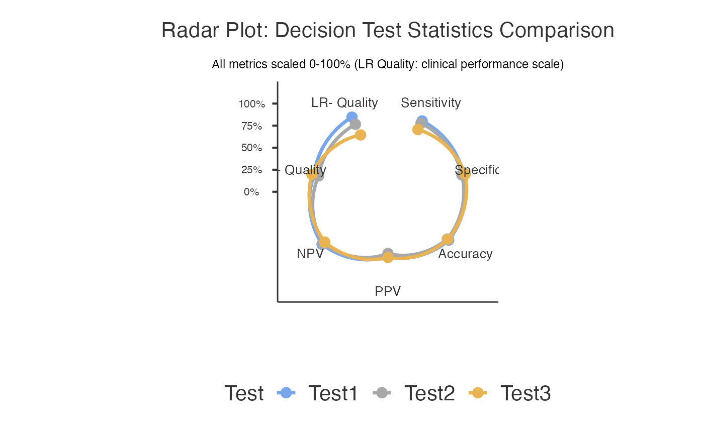

Large dataset with 500 patients for testing computational efficiency and precise estimates.
Format
A data frame with 500 rows and 8 variables:
- patient_id
Character: Patient identifier (PT0001-PT0500)
- GoldStandard
Factor: True status ("Negative", "Positive"), 28% positive
- Test1
Factor: First test ("Negative", "Positive"), Sens=0.87, Spec=0.89
- Test2
Factor: Second test ("Negative", "Positive"), Sens=0.84, Spec=0.87
- Test3
Factor: Third test ("Negative", "Positive"), Sens=0.81, Spec=0.91
- age
Numeric: Patient age in years (mean 59, SD 13)
- sex
Factor: "Male" or "Female"
- study_center
Factor: Multi-center study (Center_1 to Center_8)
Details
Large sample (n=500) from multi-center study tests computational efficiency and narrow confidence intervals.
Examples
data(decisioncompare_large)
decisioncompare(data = decisioncompare_large, gold = "GoldStandard",
goldPositive = "Positive", test1 = "Test1",
test1Positive = "Positive", test2 = "Test2",
test2Positive = "Positive", test3 = "Test3",
test3Positive = "Positive", ci = TRUE, radarplot = TRUE)
#>
#> COMPARE MEDICAL DECISION TESTS
#>
#> character(0)
#>
#> Test 1 - Recoded Data
#> ───────────────────────────────────────────────────────────────
#> Gold Positive Gold Negative Total
#> ───────────────────────────────────────────────────────────────
#> Test Positive 123.00000 45.00000 168.0000
#> Test Negative 15.00000 317.00000 332.0000
#> Total 138.00000 362.00000 500.0000
#> ───────────────────────────────────────────────────────────────
#>
#>
#> Test 1 - Confidence Intervals
#> ────────────────────────────────────────────────────────────────────────
#> Decision Statistics Estimate Lower Upper
#> ────────────────────────────────────────────────────────────────────────
#> Apparent prevalence 33.60000 29.46743 37.92787
#> True prevalence 27.60000 23.72418 31.74303
#> Test sensitivity 89.13043 82.70655 93.78736
#> Test specificity 87.56906 83.72189 90.78645
#> Diagnostic accuracy 88.00000 84.82475 90.71660
#> Positive predictive value 73.21429 65.84713 79.74303
#> Negative predictive value 95.48193 92.65753 97.44954
#> Proportion of false positives 12.43094 9.21355 16.27811
#> Proportion of false negative 10.86957 6.21264 17.29345
#> False Discovery Rate 26.78571 20.25697 34.15287
#> False Omission Rate 4.51807 2.55046 7.34247
#> ────────────────────────────────────────────────────────────────────────
#>
#>
#> Test 2 - Recoded Data
#> ───────────────────────────────────────────────────────────────
#> Gold Positive Gold Negative Total
#> ───────────────────────────────────────────────────────────────
#> Test Positive 119.00000 51.00000 170.0000
#> Test Negative 19.00000 311.00000 330.0000
#> Total 138.00000 362.00000 500.0000
#> ───────────────────────────────────────────────────────────────
#>
#>
#> Test 2 - Confidence Intervals
#> ────────────────────────────────────────────────────────────────────────
#> Decision Statistics Estimate Lower Upper
#> ────────────────────────────────────────────────────────────────────────
#> Apparent prevalence 34.00000 29.85310 38.33742
#> True prevalence 27.60000 23.72418 31.74303
#> Test sensitivity 86.23188 79.33706 91.50265
#> Test specificity 85.91160 81.89564 89.32707
#> Diagnostic accuracy 86.00000 82.64561 88.92105
#> Positive predictive value 70.00000 62.50987 76.77769
#> Negative predictive value 94.24242 91.15463 96.49834
#> Proportion of false positives 14.08840 10.67293 18.10436
#> Proportion of false negative 13.76812 8.49735 20.66294
#> False Discovery Rate 30.00000 23.22231 37.49013
#> False Omission Rate 5.75758 3.50166 8.84537
#> ────────────────────────────────────────────────────────────────────────
#>
#>
#> Test 3 - Recoded Data
#> ───────────────────────────────────────────────────────────────
#> Gold Positive Gold Negative Total
#> ───────────────────────────────────────────────────────────────
#> Test Positive 108.00000 37.00000 145.0000
#> Test Negative 30.00000 325.00000 355.0000
#> Total 138.00000 362.00000 500.0000
#> ───────────────────────────────────────────────────────────────
#>
#>
#> Test 3 - Confidence Intervals
#> ────────────────────────────────────────────────────────────────────────
#> Decision Statistics Estimate Lower Upper
#> ────────────────────────────────────────────────────────────────────────
#> Apparent prevalence 29.00000 25.05696 33.19343
#> True prevalence 27.60000 23.72418 31.74303
#> Test sensitivity 78.26087 70.44333 84.82633
#> Test specificity 89.77901 86.18746 92.70086
#> Diagnostic accuracy 86.60000 83.29701 89.46210
#> Positive predictive value 74.48276 66.58386 81.35361
#> Negative predictive value 91.54930 88.15589 94.22578
#> Proportion of false positives 10.22099 7.29914 13.81254
#> Proportion of false negative 21.73913 15.17367 29.55667
#> False Discovery Rate 25.51724 18.64639 33.41614
#> False Omission Rate 8.45070 5.77422 11.84411
#> ────────────────────────────────────────────────────────────────────────
#>
#>
#> Decision Test Comparison
#> ────────────────────────────────────────────────────────────────────────────────────────────────────────────────────────────────────────────────────────────────────────────────────────────────────────────────────────────────────────────────────────
#> Test Sensitivity Specificity Accuracy Positive Predictive Value Negative Predictive Value Positive Likelihood Ratio Negative Likelihood Ratio
#> ────────────────────────────────────────────────────────────────────────────────────────────────────────────────────────────────────────────────────────────────────────────────────────────────────────────────────────────────────────────────────────
#> Test1 89.13043 87.56906 88.00000 73.21429 95.48193 7.170048 0.1241256
#> → Good balanced performance; Moderate positive evidence; Moderate negative evidence
#> Test2 86.23188 85.91160 86.00000 70.00000 94.24242 6.120773 0.1602591
#> → Good balanced performance; Moderate positive evidence; Moderate negative evidence
#> Test3 78.26087 89.77901 86.60000 74.48276 91.54930 7.656874 0.2421405
#> → Good specificity for confirmation; Moderate positive evidence
#> ────────────────────────────────────────────────────────────────────────────────────────────────────────────────────────────────────────────────────────────────────────────────────────────────────────────────────────────────────────────────────────
#>
#>
#> <div style="font-family: Arial, sans-serif; max-width: 800px; margin:
#> 0 auto; padding: 20px;"><h2 style="color: #2c3e50; border-bottom: 2px
#> solid #3498db;">📋 Clinical Summary
#>
#> Among the tests evaluated, Test1 demonstrated optimal diagnostic
#> performance with 89.1% sensitivity (95% CI: [see confidence interval
#> table]), 87.6% specificity (95% CI: [see confidence interval table]),
#> 73.2% positive predictive value, 95.5% negative predictive value, and
#> 88% overall accuracy. The likelihood ratio for positive results was
#> 7.17 and for negative results was 0.12.<h3 style="color: #27ae60;
#> margin-top: 30px;">📝 Report Sentences
#>
#> <div style="background-color: #f8f9fa; padding: 15px; border-left: 4px
#> solid #28a745; margin: 15px 0;"><h4 style="margin-top: 0;">Methods
#> Section:
#>
#> <p style="font-style: italic; line-height: 1.6;">We compared the
#> diagnostic performance of 3 tests (Test1, Test2, Test3) against the
#> gold standard reference using diagnostic accuracy analysis. The study
#> included 500 cases with complete data. Performance metrics calculated
#> included sensitivity, specificity, positive and negative predictive
#> values, likelihood ratios, and overall accuracy.
#>
#> <div style="background-color: #e8f4f8; padding: 15px; border-left: 4px
#> solid #3498db; margin: 15px 0;"><h4 style="margin-top: 0;">Results
#> Section:
#>
#> <p style="font-style: italic; line-height: 1.6;">Among the tests
#> evaluated, Test1 demonstrated optimal diagnostic performance with
#> 89.1% sensitivity (95% CI: [see confidence interval table]), 87.6%
#> specificity (95% CI: [see confidence interval table]), 73.2% positive
#> predictive value, 95.5% negative predictive value, and 88% overall
#> accuracy. The likelihood ratio for positive results was 7.17 and for
#> negative results was 0.12.
#>
#> <h3 style="color: #8e44ad; margin-top: 30px;">💡 Clinical
#> Recommendations
#>
#> <div style="background-color: #fff3cd; padding: 15px; border-radius:
#> 8px;">
#>
#> Clinical Consideration: Consider using Test1 in combination with other
#> tests for optimal diagnostic accuracy.
#>
#> Implementation Note: Results should be interpreted in the context of
#> disease prevalence in your clinical population. Consider local
#> validation studies before implementation.
#>
#> <div style="font-family: Arial, sans-serif; max-width: 900px; margin:
#> 0 auto; padding: 20px;"><h2 style="color: #2c3e50; text-align: center;
#> border-bottom: 2px solid #3498db; padding-bottom: 10px;">🔬 About
#> Medical Decision Test Comparison
#>
#> <div style="background: linear-gradient(135deg, #e3f2fd 0%, #bbdefb
#> 100%); padding: 20px; border-radius: 10px; margin: 20px 0;"><h3
#> style="color: #1565c0; margin-top: 0;">📊 What This Analysis Does
#>
#> <p style="line-height: 1.6; color: #333;">This tool compares the
#> diagnostic performance of multiple medical tests against a gold
#> standard reference. It systematically evaluates sensitivity,
#> specificity, predictive values, likelihood ratios, and overall
#> accuracy to help you determine which test performs best for your
#> clinical scenario.
#>
#> <div style="background-color: #f1f8e9; border: 1px solid #8bc34a;
#> padding: 20px; border-radius: 8px; margin: 20px 0;"><h3 style="color:
#> #4a7c59; margin-top: 0;">🎯 When to Use This Analysis
#>
#> <ul style="line-height: 1.8; color: #4a7c59;">Test Validation:
#> Comparing new diagnostic methods against established standardsMethod
#> Comparison: Evaluating which of several tests performs betterClinical
#> Research: Validating biomarkers, imaging techniques, or clinical
#> assessmentsQuality Assessment: Measuring agreement between different
#> raters or methodsProtocol Development: Optimizing diagnostic
#> workflows<div style="background-color: #fff3e0; border: 1px solid
#> #ff9800; padding: 20px; border-radius: 8px; margin: 20px 0;"><h3
#> style="color: #e65100; margin-top: 0;">📝 How to Use This Analysis
#>
#> <ol style="line-height: 1.8; color: #e65100;">Select Gold Standard:
#> Choose your most reliable reference test (e.g., biopsy, expert
#> consensus)Choose Tests to Compare: Select 2-3 diagnostic tests you
#> want to evaluateDefine Positive Levels: Specify what constitutes a
#> "positive" result for each testConfigure Options: Enable statistical
#> comparisons, confidence intervals, or visualizations as neededRun
#> Analysis: Review results tables and clinical interpretationsCopy
#> Report: Use the auto-generated sentences for your documentation<div
#> style="background-color: #f3e5f5; border: 1px solid #9c27b0; padding:
#> 20px; border-radius: 8px; margin: 20px 0;"><h3 style="color: #6a1b9a;
#> margin-top: 0;">📈 Key Metrics Explained
#>
#> <div style="display: grid; grid-template-columns: 1fr 1fr; gap: 15px;
#> color: #6a1b9a;">
#>
#> Sensitivity: Probability test is positive when disease present
#> (rule-out ability)
#>
#> Specificity: Probability test is negative when disease absent (rule-in
#> ability)
#>
#> PPV: Probability of disease when test positive
#>
#> NPV: Probability of no disease when test negative
#>
#> LR+: How much positive test increases odds of disease
#>
#> LR-: How much negative test decreases odds of disease
#>
#> Accuracy: Overall probability of correct classification
#>
#> McNemar Test: Statistical comparison between paired tests
#>
#> <div style="background-color: #e8f5e8; border: 1px solid #4caf50;
#> padding: 20px; border-radius: 8px; margin: 20px 0;"><h3 style="color:
#> #2e7d32; margin-top: 0;">⚕️ Clinical Interpretation Guidelines
#>
#> <div style="display: grid; grid-template-columns: 1fr 1fr; gap: 15px;
#> color: #2e7d32;"><h4 style="margin-bottom: 5px;">Screening Tests
#> (Rule-Out):
#>
#> <p style="margin-top: 0;">• Sensitivity ≥95%: Excellent
#> • NPV ≥95%: High confidence
#> • Goal: Minimize false negatives
#>
#> <h4 style="margin-bottom: 5px;">Confirmatory Tests (Rule-In):
#>
#> <p style="margin-top: 0;">• Specificity ≥95%: Excellent
#> • PPV ≥90%: High confidence
#> • Goal: Minimize false positives
#>
#> <div style="background-color: #fff8e1; border: 1px solid #ffc107;
#> padding: 20px; border-radius: 8px; margin: 20px 0;"><h3 style="color:
#> #f57f17; margin-top: 0;">⚠️ Important Assumptions & Limitations
#>
#> <ul style="line-height: 1.6; color: #f57f17;">Gold Standard: Assumes
#> your reference test is truly accurateSample Size: Results more
#> reliable with larger, representative samplesPrevalence Dependency: PPV
#> and NPV vary with disease prevalenceMcNemar Test: Requires
#> paired/matched data for statistical comparisonsMissing Data: Cases
#> with incomplete data are excluded from analysisConfidence Intervals:
#> Calculated using Wilson method for better accuracy
#>
#> <div style='margin: 10px 0;'><div style='background-color: #eff6ff;
#> border-left: 4px solid #93c5fd; padding: 12px; margin: 8px 0;
#> border-radius: 4px;'><strong style='color: #2563eb;'>ℹ️ Analysis
#> Completed Successfully
#> <span style='color: #374151;'>3 diagnostic tests compared using 500
#> complete cases. Gold standard identified 138 diseased and 362 healthy
#> cases. Review comparison tables and statistical tests below.
